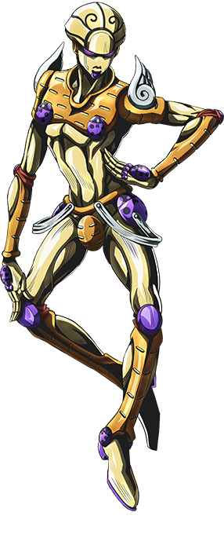

喬魯諾．喬巴拿
CV:小野賢章
本名為汐華初流乃，因為母親和義大利人再婚才將名字改為喬魯諾·喬巴拿。4歲時常常受到繼父的虐待，還被鎮上的其他孩子欺負，而為此對人類衍生出了不信任感。某一天救了一位被人追殺的流氓，使他的生活和心境有所改變，並立志要成為「流氓巨星」。故事一開始是在機場外開車兼差，之後決定加入「熱情」並與布加拉提合作。
替身名稱
黃金體驗

本名為汐華初流乃，因為母親和義大利人再婚才將名字改為喬魯諾·喬巴拿。4歲時常常受到繼父的虐待，還被鎮上的其他孩子欺負，而為此對人類衍生出了不信任感。某一天救了一位被人追殺的流氓，使他的生活和心境有所改變，並立志要成為「流氓巨星」。故事一開始是在機場外開車兼差，之後決定加入「熱情」並與布加拉提合作。